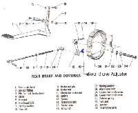

On drum brakes, a steel rod (rear) or a cable (front, or rear on scooters) links the pedal or lever to the brake arm on the hub. A wing nut at the end sets the free play. On rear disc brakes, a short pushrod links the pedal to the rear master cylinder.
What it does
The rod or cable turns the brake cam when you press the pedal or pull the lever. Return springs bring everything back. Cables stretch and rust; rods bend and their pivots wear. Too little free play makes the brake drag; too much makes the pedal travel far before braking.
Signs it is worn or failing
- Pedal or lever travels far before braking: Rear brake pedal travels too far.
- Brake drags or does not return: Brake drag.
- Cable stiff or frayed: Cable frayed or stiff.
- Weak drum brake: Drum brake is weak.
When to replace it
Replace a cable with broken strands, a kinked or cracked outer, or one that stays stiff after oiling. Replace a bent rod, a worn adjuster nut or a missing return spring. Replace split pins every time you remove them.
What to match when buying
- Make, model and year. Cable length, end fittings and adjuster type must match. Rods must have the same length and end shape.
- The wing nut, its trunnion (the small pivot block) and the return spring are often sold separately.
- Avoid cables with thin inner wire or soft outers.
Fitting notes
- Never ride with the adjuster nut missing or loose; the brake can fall off the arm.
- Adjust free play, then spin the wheel to check it turns freely, and check the brake light.
- See Adjust a drum brake, Adjust the rear brake pedal, Lubricate control cables.
- On a front drum brake with two cams, adjust the linking rod so both shoe ends touch the drum at the same time, then set the cable at the drum, then the lever play at the handlebar. The lever must not touch the bar when the brake is fully on.
- After a ride, feel the drum. If it is very hot and the brake was hardly used, the brake is dragging.
Reference (K-Light 125)
| Item | Value | PDF page |
|---|---|---|
| Rear pedal free play | 20 to 30 mm | 62 |
| Rear pushrod to master piston clearance | 0 to 0.2 mm, no preload | 116 |